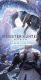
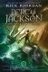

.png "Logo Nome")
Jogos:
luta, RPG, terror, aventura, indies, arcade e FPS.
Preferido - Monster Hunter

Livros:
ficção científica, aventura e terror.
Preferido - percy jackson

Filmes:
terror, aventura, ficção científica, documentário, comédia, animação e suspense.
Preferido - Coraline